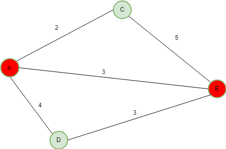

Data transfer operations is a crucial aspect in case of networking and routing. So efficient data transfer operations is a must need, with minimum hardware cost (Optical Cables, WDM Network components, Decoders, Multiplexers) and also in the minimum time possible. Thus, the need is to propose an algorithm that finds the shortest path between two nodes (source node and destination node).
Let’s see a completely new algorithm unlike Dijkstra’s Shortest Path or any other algorithm for finding Shortest Path.
Given a graph and two nodes (source node and destination node), find the shortest path between them.

Let’s Calculate the distance ratio for each link :
Distance of link AB [denoted by
d(AB)] = 10
Distance of link AC [denoted byd(AC)] = 12For link AB, Distance Ratio of AB = d(AB) / (d(AB) + d(AC))
For link AC, Distance Ratio of AC = d(AC) / (d(AB) + d(AC))
Algorithm :
Given a graph and two nodes - 1. Find all the paths connecting the two nodes. 2. For each path calculate probability = (Distance Ratio). 3. After looping over all such paths, find the path for which the probability turns out to be minimum.
Examples :
Input : 
Output : Shortest Path is [A -> B]
Explanation :
All possible paths are
P1 = [A->B]
P2 = [A->C->B]
P3 = [A->D->B]
total distance D = d(P1) + d(P2) + d(P3)
= (3) + (2 + 5) + (4 + 3)
= 17
distance ratio for P1 = d(P1) / D = 3/17
distance ratio for P2 = d(P2) / D = 7/17
distance ratio for P3 = d(P3) / D = 7/17
So the shortest path is P1 = [A->B]
Input :  Output : Shortest Path is [A -> B]
Output : Shortest Path is [A -> B]
Let’s illustrate the algorithm with a 7-node network and find out the Probabilistic shortest path between node 1 and node 5.

Below is the implementation :
# Python program to find Probabilistic
# shortest path routing algorithm for
# optical networks
# importing random module
import random
# Number of nodes
NODES = 7
# very small invalid
# when no link exists
INVALID = 0.001
distance_links = [[INVALID for i in range(NODES)]
for j in range(NODES)]
# distance of each link
distance_links[0][1] = 7
distance_links[1][0] = 7
distance_links[1][2] = 8
distance_links[2][1] = 8
distance_links[0][2] = 9
distance_links[2][0] = 9
distance_links[3][0] = 9
distance_links[0][3] = 9
distance_links[4][3] = 4
distance_links[3][4] = 4
distance_links[5][4] = 6
distance_links[4][5] = 6
distance_links[5][2] = 4
distance_links[2][5] = 4
distance_links[4][6] = 8
distance_links[6][4] = 8
distance_links[0][6] = 5
distance_links[6][0] = 5
# Finds next node from current node
def next_node(s):
nxt = []
for i in range(NODES):
if(distance_links[s][i] != INVALID):
nxt.append(i)
return nxt
# Find simple paths for each
def find_simple_paths(start, end):
visited = set()
visited.add(start)
nodestack = list()
indexstack = list()
current = start
i = 0
while True:
# get a list of the neighbors
# of the current node
neighbors = next_node(current)
# Find the next unvisited neighbor
# of this node, if any
while i < len(neighbors) and neighbors[i] in visited:
i += 1
if i >= len(neighbors):
visited.remove(current)
if len(nodestack) < 1:
break
current = nodestack.pop()
i = indexstack.pop()
elif neighbors[i] == end:
yield nodestack + [current, end]
i += 1
else:
nodestack.append(current)
indexstack.append(i + 1)
visited.add(neighbors[i])
current = neighbors[i]
i = 0
# Find the shortest path
def solution(sour, dest):
block = 0
l = []
for path in find_simple_paths(sour, dest):
l.append(path)
k = 0
for i in range(len(l)):
su = 0
for j in range(1, len(l[i])):
su += (distance_links[l[i][j-1]]
[l[i][j]])
k += su
# print k
dist_prob = []
probability = []
for i in range(len(l)):
s, su = 0, 0
for j in range(1, len(l[i])):
su += (distance_links[l[i][j-1]]
[l[i][j]])
dist_prob.append(su/(1.0 * k))
for m in range(len(dist_prob)):
z = (dist_prob[m])
probability.append(z)
for i in range(len(probability)):
if(probability[i] == min(probability)):
z = l[i]
print("Shortest Path is", end = " ")
print(z)
# Driver Code
if __name__ == '__main__' :
source, dest = 1, 5
# Calling the solution function
solution(source, dest)
Output :
Shortest Path is [1, 2, 5]
Advantage over common Shortest Path Algorithms :
Most of the shortest path algorithms are greedy algorithms. So its based on the fact that an optimal solution leads to a globally optimal solution. In most of the cases, due to greedy property, it may not always lead to an optimal solution. But using this algorithm, one can always guarantee an optimal solution and hence the accuracy is 100%.